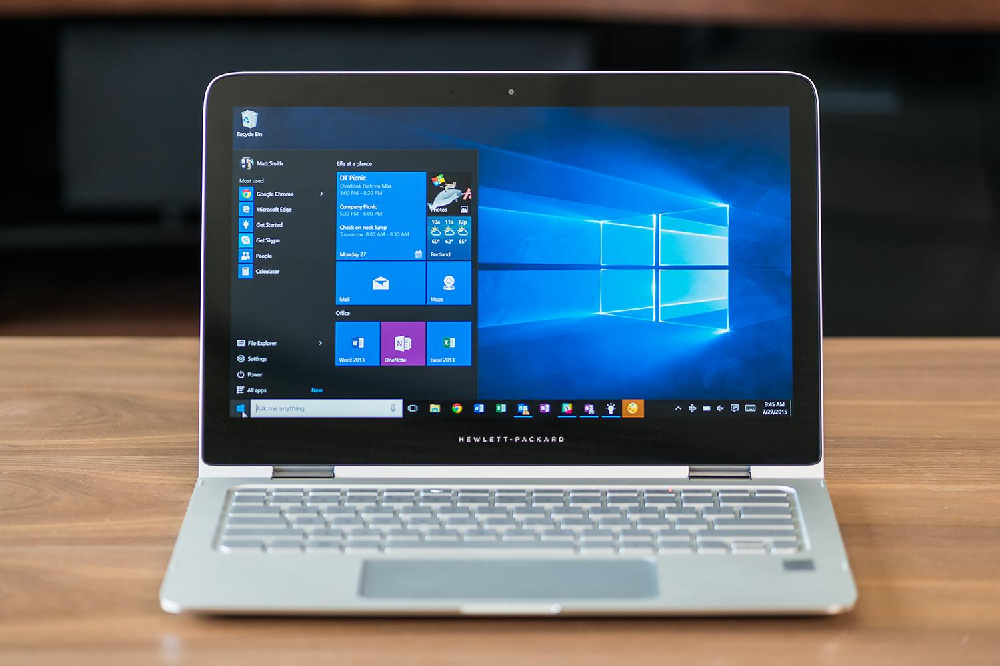
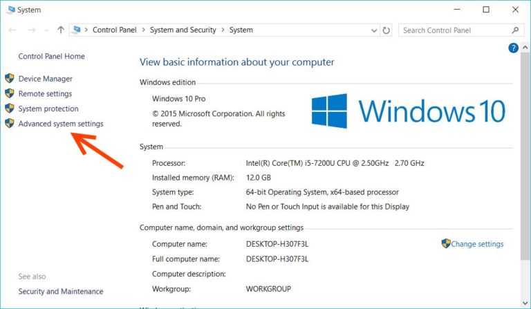
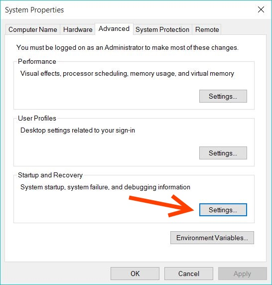
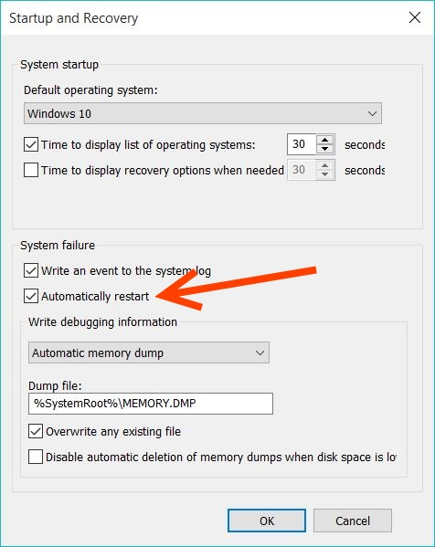

Windows Tips – ຍົກເລີກ Restart ແກ້ປັນຫາ Bluescreen ຈໍຟ້າ ຈໍດຳ ໃຫ້ເຮັດວຽກໄດ້ Windows 7, 8 และ Windows 10
ອາການຕີດ blue screen of death ຫຼື BSOD ທີ່ເປັນບັນຫາປວດຫົວ ບາງຄັ້ງບໍ່ໄດ້ເປັນຕາຢ້ານຢາງທີ່ຄິດ ພຽງແຕ່ເຮາສາມາດກວດເຊັກແລະເຂົ້າໃຈບັນຫາທີ່ເກີດຂື້ນໄດ້ ໂດຍການສັງເກດຈາກລະຫັດເວລາທີ່ເກີດ BSOD ຂື້ນມາ ໂດຍມັກຈະບອກເປັນລະຫັດ ໃຫ້ເຮົາເຊັກໄດ້ວ່າເກີດຈາກສາເຫດໃດ ແຕ່ບັນຫາທີ່ເຮົາມັກຈະພົບເຫັນກໍ່ຄື ລະບົບຣີສະຕາດຫຼັງຈາກທີ່ເກີດບູສະກີນບໍ່ດົນ ເຮັດໃຫ້ບໍ່ທັນເຫັນລະຫັດບັນຫາທີ່ເກີດຂື້ນ ເຮັດໃຫ້ການແກ້ໄຂເຮັດໄດ້ຍາກ

ຕາມຈິງກໍ່ຍັງພໍມີວິທີທີ່ຊ່ວຍໃຫ້ເຮາສາມາດເກັບຂໍ້ມູນເພື່ອແກ້ໄຂໄດ້ເຊັ່ນ ການຖ່າຍຮູບໜ້າຈໍ ຫຼືການຈົດຕົວເລກເຫຼົ່ານັ້ນ ແຕ່ສ່ວນໃຫຍ່ເມື່ອເກີດ BSOD ເຮົາມັກບໍ່ທັນໄດ້ຕັ້ງໂຕ ເຖິງຈະເອາມືຖືມາຖ່າຍກໍ່ຕາມ ຢ່າງໃດກໍ່ຕາມຍັງມີອີກວິທີໜື່ງທີ່ແສນງ່າຍ ຄື ການຍົກເລີກລະບົບຣີສະຕາດເມື່ອເກີດບັນຫາ ດ້ວຍການ Disabling Automatic Restart ນັ້ນເອງ
ວິທີການ Disabling Automatic Restart ເວລາທີ່ເກີດ BSOD ເຮັດໄດ້ໂດຍ

ໃຫ້ຄລິກຂວາທີ່ Start Menu ແລ້ວເລືອກທີ่່ System

ຄລິກເລືອກທີ່ Advanced system settings

ເລືອກທີ່ແທັບ Advanced ແລ້ວຄລິກທີ່ Settings… ທີ່ຫົວຂໍ້ Startup and Recovery ເລື່ອນໄປທີ່ี่ System failure ເອາເຄື່ອງໝາຍໜ້າ Automatically restart ອອກ ພຽງເທົ່ານີ້ເມື່ອເກີດບັນຫາກັບລະບົບຫຼື BSOD ລະບົບກໍ່ຈະບໍ່ຣີສະຕາດ ເພື່ອໃຫ້ເຮົາເກັບຂໍ້ມູນສຳລັບການແກ້ໄຂຕໍ່ໄປ Windows 7, 8 และ Windows 10.